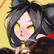

The table below shows the location of the bounty shikigami in Onmyoji. Bounties refresh twice a day and are a good way to get Jades, Shards, and Coins. Using the table below, players can find the bounties quicker. It's a fork of this table, but providing information for both EN and JP onmyoji instead of EN and CN, updated bounty hint information, information reviewed and updated, consistency, typos fixed, and made way lighter.
Note that Challenge Stages will offer at least 14 units of a Shikigami. However, because of the scarcity of Challenge Tickets, it is not recommend to use them unless the Bounty is hard to find.
ヒント column entries with half like this
are ones I did not yet confirm if that half is the equivalent in the other language.
is used as placeholder for missing japanese info.
Last update: Aug 10, 2019: fix missing information for Shouzu on Storm's Peak
| 式神 | ヒント | Location |
|---|---|---|
 Lantern Soul |
No hints. |
Chapter 1 - First Green Imp has 2 in Normal, Second Lantern Boy has 2 in Hard Chapter 2 - Second Grave Digger has 2, First Parasite has 2 Chapter 3 - First Akashita has 2, Second Samurai X has 2 Chapter 5 - Boss Kamikui has 1 Chapter 6 - The two Lantern Soul have 1 each Chapter 7 - Second Kappa has 1 [3 or more] Chapter 9 - First Lantern Boy has 3, Second Lantern Boy has 1, Boss Mouba has 1 Chapter 13 - Boss Kubinashi has 1 Chapter 17 - Boss Lord Arakawa has 1 Riverside Tales - Stage Three has 2 [3 or more] Arakawa's Fury - Stages One to Three have 3 each Ubume's Shield - Stages Five/Seven have 1 each Summer Poem - Stage Five has 2 [3 or more] Shishio's Wake - Stage Two has 3 [3 or more] Aoandon Tales - Stage One has 3 [3 or more] Tender of Sea - Stage One has 3 [3 or more] Blood Moon Rises - Stage Two has 3 [3 or more] Youko's Romance - Stage One has 3 |
|
Akashita |
No hints. |
Chapter 3 - First Akashita has 1, Second Akashita has 1 Chapter 10 - Second Satori has 1 Chapter 15 - All enemies have 1 except Boss Chapter 16 - First Akashita has 1, Second Akashita has 2, Third Akashita has 1 [3 or more] Chapter 23 - The two Hone Onna have 3 each Bond of Momiji - Stages Six/Seven have 1 each Riverside Tales - Stage Three has 1 Cry Me a River - Stages Four to Six have 1 each Arakawa's Fury - Stages One to Three have 1 each Storm's Peak - Stages Five/Six have 1 each [3 or more] Summer Poem - Stage One has 3, Stage Six has 1 [3 or more] Shishio's Wake - Stage Four has 3 [3 or more] Aoandon Tales - Stage One has 1, Stage Three has 3 Tender of Sea - Stage Three has 2 [3 or more] Blood Moon Rises - Stage One has 1, Stage Four has 3 Youko's Romance - Stage Two has 1 |
|
Red Imp |
Unconfirmed:
赤鬼 - Red ghost - Slapping butt |
[3 or more] Chapter 4 - First Umbrella has 3, Second Umbrella has 1 in Normal, the two Red Imp have 1 each [3 or more] Chapter 5 - First Nurikabe has 2, Second Nurikabe has 3, the two Hahakigami have 1 each Chapter 6 - The two Chocho have 2 each Chapter 7 - Boss Youko has 2 Chapter 11 - The two Ichimokuren have 2 each [3 or more] Chapter 13 - The three Gaki have 3 each, the three Umbrella have 1 each [3 or more] Chapter 14 - The three Hahakigami have 3 each, Boss Yumekui has 3 Chapter 15 - The three Green Imp have 2 each Soul - Stage One has 2 Demon Seal - Kuro Mujou, Hone Onna, Shouzu, and Kyonshi Ani have 1 each, Umibozu has 2 Riverside Tales - Stage Six has 1 [3 or more] Summer Poem - Stage Two has 3 [3 or more] Shishio's Wake - Stage Three has 3, Stage Six has 1 Tender of Sea - Stage One has 1, Stage Five has 2 Blood Moon Rises - Stage Three has 1 [3 or more] Youko's Romance - Stage One has 3, Stage Five has 1 |
|
Green Imp |
No hints. |
Chapter 1 - The two Green Imp have 1 each, First Lantern Boy has 2 Chapter 2 - Boss Zashiki has 2 [3 or more] Chapter 5 - Last Kanko has 3 [3 or more] Chapter 6 - The two Blue Imp have 3 each, Boss Kodokushi has 3 Chapter 8 - The two Green Imp have 1 each Chapter 13 - The three Umbrella have 2 each Chapter 15 - The three Green Imp have 1 each Extra Chapter "Hell Agent in training" - Boss Kuro has 3 [3 or more] Demon Seal - Shouzu has 8, Gaki has 6, Hone Onna has 6, Kyonshi Ani has 4, Umibozu has 1 Blade's Secret - Stages Six and Seven have 1 each Riverside Tales - Stage Six has 1 [3 or more] Shishio's Wake - Stage Three has 3 Tender of Sea - Stage Five has 1 [3 or more] Blood Moon Rises - Stage Three has 3 Youko's Romance - Stage One has 1 |
|
Yellow Imp |
OK: 太鼓 - Drum Unconfirmed: 一つ目 - Single eye |
Chapter 3 - The two Yellow Imp have 1 each, Second Akashita has 1 [Quest finisher] Chapter 5 - Second Hahakigami has 2, First Kanko has 2 [Quest finisher] Chapter 8 - The two Green Imp have 2 each Chapter 12 - First Oguna has 1 Soul - Stage One has 1 [3 or more] Demon Seal - Umibozu has 3, Shouzu has 2, Kyonshi Ani has 1 Bond of Momiji - Stages Four/Five have 1 each Riverside Tales - Stages Five/Six have 1 each Storm's Peak - Stage Two has 1 Ubume's Shield - Stage Five has 1 [3 or more] Shishio's Wake - Stage One has 3 Tender of Sea - Stage One has 2, Stage Five has 1 [3 or more] Blood Moon Rises - Stage Three has 3 Youko's Romance - Stage Four has 2, Stage Five has 1 |
|
Hahakigami |
No hints. |
Chapter 2 - The Hahakigami has 1 Chapter 3 - First Yellow Imp has 2 in Normal (1 in Hard) Chapter 4 - The two Hahakigami have 1 each, Boss Ame Onna has 2 Chapter 5 - The two Hahakigami have 1 each [3 or more] Chapter 6 - The two Lantern Soul have 3 each [3 or more] Chapter 7 - First Koi has 1, Second Koi has 3 [3 or more] Chapter 8 - The two Momo have 1 each, First Umbrella has 3, Second Umbrella has 2, Boss Momo has 1 [3 or more] Chapter 9 - First Tesso has 3, Second Rat has 2 Chapter 12 - First Umibozu has 1 Chapter 14 - The three Hahakigami have 1 each [3 or more] Demon Seal - Futakuchi has 4, Kuro Mujou has 3, Hone Onna has 4, Kyonshi Ani has 2 [3 or more] Storm's Peak - Stage One has 4, Stages Two to Ten have 3 each [3 or more] Ubume's Shield - Stages One to Three have 3 each Shishio's Wake - Stage One has 1 [3 or more] Aoandon Tales - Stage Two has 3 [3 or more] Tender of Sea - Stage One has 3 [3 or more] Blood Moon Rises - Stage Two has 3 [3 or more] Youko's Romance - Stage Four has 3 |
|
Blue Imp |
OK: 凧 - Kite Unconfirmed: 青い肌 - Blue skin |
Chapter 2 - Boss Zashiki has 1 Chapter 5 - Boss Kamikui has 2 Chapter 6 - The two Blue Imp have 1 each Chapter 8 - The two Green Imp have 1 each, Boss Momo has 1 [Quest finisher] Chapter 10 - The two Ushi no Toki have 2 each Chapter 11 - Boss Momiji has 2 Extra Chapter "Hell Agent in training" - The two Momiji have 2 each Soul - Stage One has 1 [3 or more] Demon Seal - Futakuchi has 3, Kyonshi Ani has 3, Umibozu has 1 [3 or more] Blade's Secret - Stages One to Three have 4 each, Stages Four to Nine have 3 each, Stage Ten has 2 Riverside Tales - Stage Six has 1 Ubume's Shield - Stage Four to Six have 1 each [3 or more] Summer Poem - Stage Four and Five have 3 each [3 or more] Shishio's Wake - Stage Two has 3 Aoandon Tales - Stage Four has 2 Tender of Sea - Stage Five has 1 Blood Moon Rises - Stage Three has 2 [3 or more] Youko's Romance - Stage Five has 3 |
|
Parasite |
No hints. |
Chapter 2 - The Hahakigami has 1, First Grave Digger has 2, the two Parasite have 1 each Chapter 3 - Boss Hououka has 3 Chapter 5 - The two Kanko have 1 each Chapter 7 - Boss Youko have 1 each [3 or more] Chapter 11 - First Warrior Soul has 3 Chapter 12 - Boss Yuki Onna has 1 [3 or more] Chapter 16 - The three Akashita have 3 each [3 or more] Arakawa's Fury - Stage One to Three have 3 each Shishio's Wake - Stage Two has 1 Aoandon Tales - Stage One has 1 [3 or more] Tender of Sea - Stage Two has 3 [3 or more] Blood Moon Rises - Stage One has 3 [3 or more] Youko's Romance - Stage Two has 3 |
|
Umbrella からかさ |
No hints. |
[3 or more]
Chapter 4 - Sitting Hahakigami has 2 in Normal (3 in Hard), the
two Umbrella have 1 each, First Red Imp has 1, Second Red
Imp has 2 Chapter 8 - The two Umbrella have 1 each Chapter 13 - The three Umbrella have 1 each Demon Seal - Gaki has 1 [3 or more] Cry Me a River - Stages One to Three have 1 each, Stages Four to Six have 3 each [3 or more] Ubume's Shield - Stage Two has 3 [3 or more] Shishio's Wake - Stage One has 3 [3 or more] Aoandon Tales - Stage Two has 3 [3 or more] Tender of Sea - Stage Two has 1, Stage Four has 3 [3 or more] Youko's Romance - Stage Three has 3 |
|
Grave Digger |
No hints. |
[Quest finisher] Chapter 2 - The Hahakigami has 1, the two Grave Digger have 1 each, Second Parasite has 2 Chapter 12 - The two Doujo have 1 each Chapter 23 - The two Grave Digger have 1 each, Boss Puppeteer has 3 [3 or more] Blade's Secret - Stage One has 3 Riverside Tales - Stages One/Two have 1 each [3 or more] Cry Me a River - Stages One to Three have 3 each [3 or more] Arakawa's Fury - Stage One has 3 [3 or more] Ubume's Shield - Stages Four to Six have 3 each [3 or more] Summer Poem - Stages Three/Five have 3 each Shishio's Wake - Stage One has 2 [3 or more] Tender of Sea - Stage Three has 3 [3 or more] Blood Moon Rises - Stage One has 3 [3 or more] Youko's Romance - Stage Two has 3 |
|
Lantern Boy |
No hints. |
[Quest finisher] Chapter 1 - Second Green Imp has 2, the two Lantern Boy have 1 each [Quest finisher] Chapter 3 - First Akashita has 1, First Samurai X has 1 in Normal (2 in Hard), Second Samurai X has 1 Chapter 7 - The three Lantern Boy have 1 each Chapter 8 - Boss Momo has 2 Chapter 9 - The two Lantern Boy have 1 each [Quest finisher] Chapter 12 - First Doujo has 2 Chapter 15 - The three Lantern Boy have 1 each [3 or more] Demon Seal - Gaki has 3, Futakuchi has 4, Kuro Mujou has 3, Umibozu has 4 [3 or more] Riverside Tales - Stages One/Two have 3 each [3 or more] Summer Poem - Stage One has 3 [3 or more] Shishio's Wake - Stage One has 1, Stage Five has 3 [3 or more] Aoandon Tales - Stage Five has 3 Tender of Sea - Stage One has 1, Stage Four has 2 [3 or more] Blood Moon Rises - Stage Two has 3 Youko's Romance - Stage One has 1 |
|
Nurikabe ぬりかべ |
OK: 石壁 - Wall Unconfirmed: 石 - Stone 苔 - Moss |
Chapter 3 - First Yellow Imp has 1 in Normal (2 in Hard) [3 or more] Chapter 4 - First Hahakigami has 2, Second Hahakigami has 1 in Normal (? in Hard), Second Umbrella has 2 in Normal (3 in Hard), First Red Imp has 2 in Normal (3 in Hard) Chapter 5 - First Nurikabe has 1 in Normal (2 in Hard), Second Nurikabe has 1, First Hahakigami has 2 Chapter 6 - The two Chocho have 1 each Chapter 7 - First Kappa has 2, Boss Youko has 3 [3 or more] Chapter 8 - First Momo has 2, Second Momo has 3 Chapter 11 - First Hitotsume has 1, First Gaki has 1 Chapter 12 - First Umibozu has 2, Second Umibozu has 1 [Very good] Chapter 14 - The three Nurikabe have 6 each Soul - Stage One has 1 [3 or more] Demon Seal - Gaki has 1, Kuro Mujou has 4 Bond of Momiji - Stages Four and Five have 1 each Ubume's Shield - Stages One to Three have 1 each [3 or more] Aoandon Tales - Stage One has 3 Tender of Sea - Stage One has 1 [3 or more] Blood Moon Rises - Stage One has 3 [3 or more] Youko's Romance - Stage One has 3 |
|
Black Panther 黑豹 |
No hints. |
Chapter 5 - First Nurikabe has 1 in Normal (none in Hard) [3 or more] Riverside Tales - Stage Four has 3 |
|
Zombie Dog キョンシー犬 |
No hints. |
Chapter 1 - First Green Imp has 2 in Hard (none in Normal) [3 or more] Chapter 7 - First two Lantern Boy have 3 each, Third Lantern Boy has 1, Last Kappa has 2 [3 or more] Aoandon Tales - Stage One has 3 [3 or more] Tender of Sea - Stage Two has 3 [3 or more] Blood Moon Rises - Stage Five has 3 [Very good] Kiyohime's Grudge - Stage One has 13 |
|
Mio |
OK: 桜木 - Cherry tree 赤い - Red Unconfirmed: 妖艶 - Seductive 赤尾 - Red tail |
Chapter 6 - The two Chocho have 1 each [Quest finisher] Chapter 18 - The three Mio have 2 each Soul - Stage One has 1, Sougenbi has 1 Bond of Momiji - Stage Three has 1 [3 or more] Blade's Secret - Stage Four has 3 Cry Me a River - Stage Seven has 1 [3 or more] Storm's peak - Stages One to Four have 4 each, Stages Five/Six have 3 each, Stage Nine has 1 Cry Me a River - Stage Seven has 1 [3 or more] Summer Poem - Stage Six has 3 Aoandon Tales - Stage Three has 1 Blood Moon Rises - Stage Five has 2 Youko's Romance - Stage Five has 2 |
|
Zashiki |
OK 鬼火 - Orb 角 - Horn 幸運 - Fortune 富 - Wealth |
Chapter 2 - Boss Zashiki has 1 Chapter 7 - Boss Kanko has 2 [Quest finisher] Chapter 10 - Second Satori has 2, Second Puppeteer has 2 [Quest finisher] Chapter 23 - The two Grave Digger have 2 each Soul - Stage Three has 2, Stage Six has 1 [Tip] Raid/PvP - Pretty much everyone has one [3 or more] Cry Me a River - Stage One has 3 Riverside Tales - Stages Two/Six have 1 each Tender of Sea - Stage Two has 2 Youko's Romance - Stage Seven has 2 |
|
Koi |
OK: 池 - Pond 尾 - Tail Unconfirmed: 泡 - Bubbles |
[3 or more] Chapter 7 - First Koi has 3, Second Koi has 1, First Kappa has 1, First Lantern Boy to the right has 2 Soul - Stages Two/Three/Nine have 1 each Blade's Secret - Stage Eight to Ten have 1 each Riverside Tales - Stages Eight/Nine have 2 each, Stage Ten has 1 Arakawa's Fury - Stages Four to Six have 1 each Summer Poem - Stage Five and Nine have 2 each Shishio's Wake - Stages Two/Eight have 1 each Aoandon Tales - Stage Six has 2 [3 or more] Tender of Sea - Stages Three has 1, Stage Four has 4, Stage Six has 2, Stages Seven to Nine have 1 each Youko's Romance - Stage Five has 1 |
|
 Kyuumei Neko |
No hints. |
Chapter 1 - Boss Kyuumei Neko has 3 Chapter 15 - The three Lantern Boy have 2 each, Boss Kyonshi Imoto has 3 [Very good] Chapter 18 - The three Kyuumei Neko have 6 each, the three Mio have 2 each Chapter 25 - First Kodokushi has 1 Blade's Secret - Stages Eight/Nine have 1 each, Stage Ten has 2 [3 or more] Cry Me a River - Stages One to Three have 3 each Ubume's Shield - Stage Nine has 2 Summer Poem - Stage Four has 2 Tender of Sea - Stage Six has 1 [3 or more] Blood Moon Rises - Stage Four has 4 Youko's Romance - Stage Five has 2 |
|
Tanuki |
No hints. |
[3 or more] Chapter 10 - First Satori has 3, First Puppeteer has 2 Chapter 17 - The three Tanuki have 1 each Soul - Stage Nine has 1 [3 or more] Blade's Secret - Stages One to Three have 4 each, Stages Four to Ten have 3 each Bond of Momiji - Stage Seven has 1 [3 or more] Storm's Peak - Stage Two has 3 Summer Poem - Stage Eight has 2 Aoandon Tales - Stage Two has 2 Tender of Sea - Stage Four has 1 Blood Moon Rises - Stage Three has 1 [3 or more] Youko's Romance - Stage Five has 2, Stage Six has 3 |
|
Kappa |
OK: 池 - Pond 蓮の葉 - Water lily leaf Unconfirmed: 水球 - Water ball 川 - River |
Chapter 7 - The two Kappa have 1 each Chapter 23 - The two Grave Digger have 1 each Soul - Stage Two has 1 Blade's Secret - Stage Eight to Ten have 1 each Riverside Tales - Stage One to Ten have 1 each Cry Me a River - Stage Eight has 5, but this stage is hard [3 or more] Arakawa's Fury - Stage Four to Six have 3 each [3 or more] Summer Poem - Stage Seven has 4 Shishio's Wake - Stage Two has 2 [3 or more] Tender of Sea - Stage Three/Six have 3 each, Stages Four/Eight/Nine/Ten have 1 each, Stage Five has 5, Stage Seven has 2 Blood Moon Rises - Stage Three has 1 Youko's Romance - Stage Seven has 2 |
 Oguna |
OK: 献祭 - Offering 翼 - Wings 羽衣 - Feathers |
Chapter 12 - The two Oguna have 1 each Soul - Stage Four has 1 Blade's Secret - Stage Nine has 2 [3 or more] Riverside Tales - Stage One has 3 Cry Me a River - Stage Ten has 1 Storm's Peak - Stages Eight/Nine have 1 each Summer Poem - Stage 10 has 2 [3 or more] Aoandon Tales - Stage Three has 3 Tender of Sea - Stage Eight has 1 Youko's Romance - Stage Seven has 1 |
|
Doujo |
OK: 娘 - Little girl 翼 - Wings Unconfirmed: - Feather coat |
[3 or more] Chapter 3 - First Samurai X has 2 in Normal (1 in Hard), Second Akashita has 2, Last Yellow Imp has 3 Chapter 11 - Boss Momiji has 1 [3 or more] Chapter 12 - First Doujo has 1, Second Doujo has 3, Second Oguna has 1 Soul - Stage Two has 2, Stage Four has 1 Riverside Tales - Stage One has 1 [3 or more] Arakawa's Fury - Stage Two has 3 Summer Poem - Stage 10 has 2 Aoandon Tales - Stage Three has 1 Tender of Sea - Stage Eight has 1 Youko's Romance - Stage Seven has 2 |
|
Gaki |
No hints. |
Chapter 9 - Boss Mouba has 3 [3 or more] Chapter 11 - First Gaki has 3, Second Gaki has 2 Chapter 13 - The three Gaki have 1 each Chapter 16 - The three Gaki have 1 each Soul - Stage Eight has 1 [3 or more] Demon Seal - Gaki has 3 [3 or more] Bond of Momiji - Stages One to Three have 4 each, Stages Four to Ten have 3 each Aoandon Tales - Stage Five has 2 Tender of Sea - Stage Two has 1 Blood Moon Rises - Stage Seven has 2 Youko's Romance - Stage Six has 2 |
|
Kodokushi |
Unconfirmed:
- Poison 蟲 - Bugs |
Chapter 6 - Boss Kodokushi has 1 Soul - Stage Six has 1 Cry Me a River - Stage Seven to Ten have 1 each [3 or more] Summer Poem - Stage Three has 3 Aoandon Tales - Stage Two has 1 Blood Moon Rises - Stage Two has 1 |
|
Karasu Tengu 烏天狗 |
OK: 薙刀 - Naginata 翼 - Wings 仮面 - Mask |
Chapter 3 - The two Akashita have 1 each Chapter 9 - The two Yamausagi have 1 each, Boss Mouba has 2 [3 or more] Chapter 12 - Second Umibozu has 2, the two Oguna have 2 each (max 4 each since Oguna can revive) Chapter 17 - The three Karasu Tengu have 1 each Chapter 18 - Boss Ootengu has 3 [3 or more] Chapter 25 - Third Samurai X has 3 Soul - Stage Six has 1 Bond of Momiji - Stage Four has 2, Stage Nine has 1 Blade's Secret - Stages Six/Seven have 1 each Riverside Tales - Stage Nine has 2 [3 or more] Cry Me a River - Stages Seven to Nine have 3 each, Stage Ten has 5 [3 or more] Arakawa's Fury - Stage Four has 4 [3 or more] Storm's Peak - Stage Five has 4 Ubume's Shield - Stage Three has 2 [3 or more] Summer Poem - Stage Five has 3 Aoandon Tales - Stage Two has 1 Tender of Sea - Stage Five has 1, Stage Nine has 3 Blood Moon Rises - Stage Seven has 2 Youko's Romance - Stage Three has 1 |
|
Kamikui 髪喰い |
No hints. |
Chapter 5 - Boss Kamikui has 1 Chapter 10 - Boss Shuten Doji has 2 Chapter 21 - The three Kamikui have 1 each Soul - Stage Seven has 1 [3 or more] Riverside Tales - Stage Three has 3 Summer Poem - Stage Two has 1 [3 or more] Shishio's Wake - Stages Four/Five have 1 each, Stage Six has 4, Stages Seven/Eight have 3 each, Stages Nine/Ten have 2 each Aoandon Tales - Stages Four/Ten have 1 each Blood Moon Rises - Stage Four has 1 Youko's Romance - Stage Two has 1 |
|
Kusa 蛍草 |
OK: タンポポ - Dandelion チン - Ding Unconfirmed: - Healing |
Chapter 21 - Boss Kusa has 2 Chapter 23 - Boss Kusa has 3 Soul - Stages Two/Nine/Ten have 1 each [3 or more] Soul - Sougenbi has 4, same for all three difficulties Riverside Tales - Stages Four/Nine have 1 each Cry Me a River - Stages Four/Nine have 1 each, Stage Ten has 3 [3 or more] Demon Seal - Kusa has 3 Raid/PvP - Quite common amongst low level players Summer Poem - Stage Eight has 5 Shishio's Wake - Stages Three to Ten have 1 each Aoandon Tales - Stage Seven has 1 Tender of Sea - Stage Eight has 2 Youko's Romance - Stage Six has 2 |
|
Warrior Soul 侍の霊 |
No hints. |
Chapter 11 - The two Warrior Soul have 1 each Chapter 12 - Boss Yuki Onna has 2 [Quest finisher] Chapter 25 - Second Kodokushi has 2 [3 or more] Riverside Tales - Stage Three has 3 [3 or more] Cry Me a River - Stage Three has 3 Tender of Sea - Stages Four/Eight have 1 each Blood Moon Rises - Stage One has 1, Stage Seven has 2 Youko's Romance - Stage Two has 1 |
|
Kyonshi Imoto キョンシー妹 |
No hints. |
Chapter 12 - Boss Yuki Onna has 1, and can use Kyonshi Ani revival trick Chapter 15 - Boss Kyonshi Imoto has 1 Bond of Momiji - Stage Two has 1 Riverside Tales - Stage Nine has 1 Ubume's Shield - Stages Four to Six have 1 each Summer Poem - Stage Six has 1 Shishio's Wake - Stages Three/Five have 1 each Tender of Sea - Stage Seven has 2 [Best option] Blood Moon Rises - Stage Six has 2 Youko's Romance - Stages Three/Five/Ten have 1 each |
|
Samurai X 兵俑 |
OK: 兵甲 - Armor 石化 - Petrified - Hardened Unconfirmed: - Katana |
Chapter 3 - The two Samurai X have 1 each Chapter 10 - Boss Shuten Doji has 1 Chapter 21 - Second Enenra has 1, Second/Third Kamikui have 1 each Chapter 25 - The three Samurai X have 1 each Soul - Stage Two has 1, Sougenbi has 1 Bond of Momiji - Stages Four/Five/Eight/Ten have 1 each Riverside Tales - Stages Four/Ten have 1 each [3 or more] Cry Me a River - Stage Seven has 4 Shishio's Wake - Stage One has 1, Eight has 2 Aoandon Tales - Stage Four has 1 Tender of Sea - Stage Seven has 1 Blood Moon Rises - Stage Seven has 1 Youko's Romance - Stages Six/Ten have 1 each |
|
Ushi no Toki 丑の刻参り |
OK: 木槌 - Wooden hammer 藁人形 - Straw doll Unconfirmed: - Scarecrow - Curse nail - Cursed dart |
Chapter 10 - The two Ushi no Toki have 1 each [3 or more] Chapter 21 - First Kamikui has 3, Second/Third Kamikui have 2 each Riverside Tales - Stage Four has 2 Soul - Stages Five/Seven have 1 each Bond of Momiji - Stages Four/Nine have 1 each Riverside Tales - Stage Four has 2 Cry Me a River - Stages Four to Six have 1 each Aoandon Tales - Stages Four/Ten have 1 each Blood Moon Rises - Stage Ten has 1 Youko's Romance - Stage Six has 2, Stage Nine has 1 |
|
Hitotsume 一つ目小僧 |
OK: 一つ目 - One eye 坊主 - Monk 金剛経 - Diamond Sutra |
[3 or more] Chapter 11 - Second Warrior Soul has 3, the two Hitotsume have 1 each in Normal (2 each in Hard) Chapter 25 - Second Warrior Soul has 1, Second Itsumade has 2 Soul - Stages One/Five have 1 each Bond of Momiji - Stages Eight to Ten have 1 each Riverside Tales - Stage Two has 1 Storm's Peak - Stage Four has 1 Summer Poem - Stage Nine has 1 Shishio's Wake - Stages Three/Five/Ten have 1 each Aoandon Tales - Stage Five has 1 Youko's Romance - Stage Two has 1 |
|
Tesso 鉄鼠 |
No hints. |
Chapter 9 - First Tesso has 1, Second Tesso has 2, Second Lantern Boy has 2, Second Yamausagi has 1 [Very good] Coin Spirit has 16 (best way is to line up in the team menu) Bond of Momiji - Stage Five has 2 Cry Me a River - Stages One to Three have 1 each Tender of Sea - Stage Six has 1 Youko's Romance - Stage Seven has 1 |
|
Shouzu 椒図 |
OK: 扇子 - Fan 水 - Water 貝殻 - Shell 尻尾 - Tail |
Chapter 22 - Boss Jorogumo has 1 Chapter 25 - The two Samurai X have 1 each Soul - Stage Three/Eight/Nine/Ten have 1 each, Sougenbi has 1 [3 or more] Demon Seal - Shouzu has 3 Bond of Momiji - Stages Six to Eight have 1 each, Stages Nine/Ten have 2 each Blade's Secret - Stage Ten has 1 Riverside Tales - Stages Eight/Ten have 2 each Cry Me a River - Stage Eight has 1 Arakawa's Fury - Stage Seven has 1 Storm's Peak - Stages Four/Five/Ten have 1 each Shishio's Wake - Stage Ten has 1 Aoandon Tales - Stages Seven/Nine/Ten have 1 each Tender of Sea - Stage Two has 1 Blood Moon Rises - Stages Seven/Nine have 1 each Youko's Romance - Stage Seven has 1 |
|
Ame Onna 雨女 |
OK: - Tears - Rain - Umbrella |
Chapter 4 - Boss Ame Onna has 1 Soul - Stage Six has 1 [3 or more] Blade's Secret - Stage Three has 3 Bond of Momiji - Stage Six has 2 Cry Me a River - Stages One to Ten have 1 each Riverside Tales - Stages Seven/Nine have 1 each Aoandon Tales - Stage Nine has 1 Tender of Sea - Stage Five has 3, Stages Seven/Ten have 2 each Youko's Romance - Stage Four has 1 |
|
Kanko 管狐 |
No hints. |
[Quest finisher] Chapter 5 - First Kanko has 2, Second Kanko has 1 Chapter 7 - The three Lantern Boy have 1 each [Quest finisher] Chapter 11 - Second Hitotsume has 1, First Gaki has 2, Second Gaki has 1 Extra Chapter "Hell Agent in training" - The three Koroka have 2 each Soul - Stage Eight has 1 [3 or more] Bond of Momiji - Stages One to Three have 4 each, Stages Four to Ten have 3 each Cry Me a River - Stage Nine has 5 but the fight is difficult Riverside Tales - Stage Seven has 3 [3 or more] Arakawa's Fury - Stage Three has 3 [3 or more] Summer Poem - Stage Two has 3 Aoandon Tales - Stage Six has 1 Tender of Sea - Stage Six has 1, Stage Ten has 2 Blood Moon Rises - Stage Six has 3, Stage Ten has 1 Youko's Romance - Stage Six has 3 |
|
Yamausagi 山兎 |
No hints. |
[3 or more] Chapter 9 - First Yamausagi has 4, Second Yamausagi has 3 Chapter 13 - Boss Kubinashi has 1 Chapter 16 - The three Gaki have 1 each Chapter 17 - Boss Lord Arakawa has 1 [3 or more] Chapter 23 - The three Mouba have 3 each Chapter 25 - The two Samurai X have 2 each Soul - Stage Seven has 1 Riverside Tales - Stage Five has 1 [3 or more] Arakawa's Fury - Stage Five has 4 Raid/PvP - Very Common Shishio's Wake - Stages Nine/Ten have 1 each Aoandon Tales - Stage Seven has 2 Youko's Romance - Stage Six has 1, Stage Nine has 5 |
|
Chocho 胡蝶の精 |
OK: - Drum - Cute Unconfirmed: - Mini drum - Little fairy |
Chapter 6 - The two Chocho have 1 each Chapter 8 - Boss Momo has 2 Chapter 25 - Second Itsumade has 1 Soul - Stages Three/Eight have 1 each, Sougenbi has 1 [3 or more] Blade's Secret - Stage Two has 3, Stages Four/Five have 1 each Cry Me a River - Stage Seven has 1 Riverside Tales - Stage Five has 2 [3 or more] Arakawa's Fury - Stages Four to Six have 3 each Ubume's Shield - Stages One to Three have 1 each Summer Poem - Stage One has 1 Shishio's Wake - Stages Three/Ten have 1 each Aoandon Tales - Stage Five has 2, Stage Ten has 1 Tender of Sea - Stage Eight has 1 Youko's Romance - Stage Two has 1 |
|
Yamawaro 山童 |
OK: 怪力 - Strong 石錘 - Stone hammer Unconfirmed: 一つ目 - Single eye |
[Quest finisher] Chapter 8 - Second Umbrella has 1 [Quest finisher] Chapter 16 - The three Gaki have 2 each Soul - Stage One has 1 Bond of Momiji - Stage Three has 2 [3 or more] Riverside Tales - Stage Two has 3 [3 or more] Storm's Peak - Stage Three has 3 Summer Poem - Stage Four has 1 [3 or more] Shishio's Wake - Stage Five has 3 Aoandon Tales - Stage Six has 1, Stages Seven/Nine have 2 each Tender of Sea - Stage Six has 2 [3 or more] Youko's Romance - Stage Four has 4, Stage Seven has 2 |
|
Kubinashi 首なし |
No hints. |
Chapter 13 - Last Gaki has 1, Last Umbrella has 1, Boss Kubinashi has 1 Bond of Momiji - Stage Three has 2 Riverside Tales - Stage Seven has 3 [3 or more] Cry Me a River - Stage Two has 3 [3 or more] Storm's Peak - Stage One has 3 Aoandon Tales - Stage Six has 1, Stage Seven has 2 Tender of Sea - Stages Six/Eight have 1 each Youko's Romance - Stage Four has 1 |
|
Satori 覚 |
No hints. |
Chapter 10 - The two Satori have 1 each, the two Puppeteer have 1 each Chapter 11 - Boss Momiji has 2 [3 or more] Extra Chapter "Hell Agent in training" - The two Momiji have 3 each Soul - Stage Ten has 1 [3 or more] Bond of Momiji - Stage One has 3 [3 or more] Riverside Tales - Stage Four has 3 [3 or more] Cry Me a River - Stages Four to Six have 3 each [3 or more] Ubume's Shield - Stages One to Three have 3 each Summer Poem - Stage Three has 1 Shishio's Wake - Stage Three has 1 [3 or more] Aoandon Tales - Stage Four has 4, Stage Seven has 2 Blood Moon Rises - Stage Ten has 2 |
|
Jikikaeru 磁器蛙 |
OK: - Ceramic - Cheat - Gambling Unconfirmed: - Mahjong |
Chapter 4 - Boss Ame Onna has 1 Soul - Stage Three has 1 Riverside Tales - Stage Nine has 3 Cry Me a River - Stage Ten has 5 but is very difficult Storm's Peak - Stage Three has 1 Summer Poem - Stage Four has 1 [Best option] Aoandon Tales - Stage Five has 2 Blood Moon Rises - Stage Ten has 5 Youko's Romance - Stages Four/Ten have 1 each |
|
Yuki Onna 雪女 |
No hints. |
Chapter 8 - The two Sakura have 1 each Chapter 12 - The two Doujo have 1 each, Boss Yuki Onna has 2 Bond of Momiji - Stage Six has 1 [3 or more] Arakawa's Fury - Stage Six has 4 Storm's Peak - Stages Five/Nine/Ten have 1 each Shishio's Wake - Stage Six has 1 Youko's Romance - Stage Seven has 1 |
|
Inugami 犬神 |
Unconfirmed:
- Katana - Bird - House - Protection - Purple dog |
[Best option] Chapter 10 - Second Satori has 1, Second Puppeteer has 1 Soul - Stage Four has 1 Bond of Momiji - Stages Eight to Ten have 1 each Summer Poem - Stage Nine has 1 Aoandon Tales - Stage Ten has 1 Blood Moon Rises - Stage Five has 1 Youko's Romance - Stage Eight has 1 |
 Hone Onna 骨女 |
OK: - Bones 怨恨 - Hatred Unconfirmed: - Sword |
Chapter 10 - Boss Shuten Doji has 2 Chapter 11 - Boss Momiji has 1 Chapter 13 - Boss Kubinashi has 1 Chapter 17 - Boss Lord Arakawa has 1 Chapter 23 - The two Hone Onna have 1 each Chapter 24 - Boss Hone Onna has 1 Chapter 25 - Boss ? has 1 Soul - Stage Five has 1, Stage Six has 2 Demon Seal - Hone Onna has 3 Blade's Secret - Stage Five has 1 Bond of Momiji - Stage Five has 1 [3 or more] Cry Me a River - Stage Four has 4 Summer Poem - Stage Four has 2 Aoandon Tales - Stage Ten has 1 Blood Moon Rises - Stage Seven has 2 Youko's Romance - Stage Eight has 1 |
|
Umibozu |
OK: 海 - Sea - Mustache 杖 - Cane Unconfirmed: - Fisherman - Beard - Staff |
Chapter 12 - The two Umibozu have 1 each [3 or more] Chapter 24 - The two Vampira have 3 each Soul - Stage Three has 1 [3 or more] Demon Seal - Umibozu has 3 Riverside Tales - Stage Eight has 3 Arakawa's Fury - Stages Four to Six have 1 each, Stage Eight has 5 Summer Poem - Stage Ten has 3 Shishio's Wake - Stage Eight has 2 Tender of Sea - Stages One to Ten have 1 each Blood Moon Rises - Stage Seven has 2 Youko's Romance - Stage Ten has 1 |
|
Kyonshi Ani キョンシー兄 |
Unconfirmed:
蝋燭 - Candles 棺桶 - Coffins |
Chapter 10 - Boss Shuten Doji has 1 Chapter 12 - Boss Yuki Onna has 2 [3 or more] Chapter 24 - The two Jorogumo have 3 each Soul - Stage Five has 1 [3 or more] Demon Seal - Kyonshi Ani have 3 each Bond of Momiji - Stage Two has 1 Ubume's Shield - Stages Four to Six have 1 each Summer Poem - Stage Seven has 1 Shishio's Wake - Stage Nine has 1 Aoandon Tales - Stage Six has 3 Blood Moon Rises - Stage Six has 1 Youko's Romance - Stage Ten has 5 |
|
Puppeteer 傀儡師 |
OK: 人形 - Puppet 操縦 - Control |
Chapter 10 - The two Ushi no Toki have 1 each, the two Puppeteer have 1 each Chapter 23 - Boss Puppeteer has 2 Soul - Stage Five has 1 Blade's Secret - Stage Five has 1 Shishio's Wake - Stage Seven has 1 [Best option] Blood Moon Rises - Stage Five has 2 Youko's Romance - Stage Eight has 2 |
|
Momiji 鬼女紅葉 |
Unconfirmed:
- A beautiful fairy - Accessories |
Chapter 11 - Boss Momiji has 2 [Best option] Bond of Momiji - Stages One to Ten have 1 each Riverside Tales - Stage Five has 1 Summer Poem - Stage Seven has 2 Blood Moon Rises - Stage Eight has 2 Youko's Romance - Stage Eight has 2 |
|
Hangan 判官 |
No hints. |
Chapter 16 - Boss Hangan has 1 Soul - Stage Eight has 1 Blade's Secret - Stage Seven has 1 Riverside Tales - Stage Seven has 1 Cry Me a River - Stage Seven has 1 [Best option] Ubume's Shield - Stage Seven has 3, Stages Eight to Ten have 2 each Summer Poem - Stage Eight has 2 Shishio's Wake - Stage Nine has 1 Tender of Sea - Stage Nine has 1 Blood Moon Rises - Stage Ten has 1 |
|
Sakura 桜の精 |
No hints. |
[Best option] Chapter 8 - The two Sakura have 1 each, Boss ? has 1 Riverside Tales - Stages Five/Ten have 1 each Blade's Secret - Stage Six has 1 Ubume's Shield - Stage Six has 1 Summer Poem - Stage Nine has 1 Tender of Sea - Stage Nine has 2, Stage Ten has 1 Youko's Romance - Stage Eight has 1 |
|
Yumekui 夢喰い |
Unconfirmed:
鈴 - Bell 悪夢 - Nightmare |
[Best option] Chapter 14 - Last Nurikabe has 1, Boss Yumekui has 5 Soul - Stage Four has 2, Stage Nine has 1 Riverside Tales - Stage Seven has 1 Shishio's Wake - Stage Seven has 1 Aoandon Tales - Stage Eight has 1 Youko's Romance - Stage Nine has 1 |
|
Hououka 鳳凰火 |
No hints. |
Chapter 3 - Boss Hououka has 1 Chapter 20 - Second Hannya has 1 Soul - Stage Seven has 1 Riverside Tales - Stage Five has 1 Ubume's Shield - Stage Four and Seven to Ten have 1 each [3 or more] Demon Seal - Hououka has 3 Aoandon Tales - Stage Nine has 1 Tender of Sea - Stage Ten has 1 |
|
Momo 桃の精 |
OK: 花 - Flower 舞 - Dance |
Chapter 8 - Boss Momo has 1 [Best option] Soul - Stage Three has 1 Blade's Secret - Stages Six/Ten have 1 each Bond of Momiji - Stages Eight to Ten have 1 each Riverside Tales - Stage Five has 1, Stage Ten has 2 Arakawa's Fury - Stage Ten has 1 Storm's Peak - Stage Eight has 5 Ubume's Shield - Stage Eight has 2, Stage Nine has 1 Shishio's Wake - Stage Ten has 1 Aoandon Tales - Stage Eight has 1 Youko's Romance - Stage Seven has 1 |
|
Mouba 孟婆 |
OK: お椀 - Bowl - Zither - Bitey |
Chapter 9 - Boss Mouba has 2 Chapter 23 - The three Mouba have 1 each [Best option] Soul - Stage Five has 2, Stage Six has 1 Riverside Tales - Stage Five has 1 Ubume's Shield - Stage Seven has 1, Stage Eight has 2, Stages Nine/Ten have 3 each Summer Poem - Stage Three has 1 Shishio's Wake - Stage Nine has 2 Aoandon Tales - Stages Nine/Ten have 1 each Blood Moon Rises - Stage Eight has 2 Youko's Romance - Stage Ten has 1 |
|
Vampira 吸血姫 |
OK: コウモリ - Bat Unconfirmed: 血 - Blood |
[Best option] Chapter 21 - The two Vampira have 1 each, Boss Kusa has 1 Chapter 22 - Boss Jorogumo has 1 [Best option] Chapter 24 - The two Vampira have 1 each Soul - Stage Two has 1 Bond of Momiji - Stage Seven has 2, Stage Ten has 1 Riverside Tales - Stage Eight has 2 Cry Me a River - Stage Ten has 5 but the fight is difficult Rip of the Storm - Stage Ten has 5 Ubume's Shield - Stage Ten has 2 Shishio's Wake - Stage Ten has 2 Aoandon Tales - Stage Ten has 1 Blood Moon Rises - Stages One to Nine have 1 each |
|
Kuro Mujou 黒無常 |
OK: 黒鎌 - Black scythe - Tanto sword Unconfirmed: 短刀 - Dagger |
Chapter 16 - Boss Hangan has 1 Soul - Stage Four has 1 [Quest finisher] Chapter 24 - The three Kiyohime have 2 each [3 or more] Demon Seal - Kuro Mujou has 3 Blade's Secret - Stage Seven has 1 [3 or more] Riverside Tales - Stage Six has 3 Summer Poem - Stage Two has 1 Aoandon Tales - Stage Eight has 1 Blood Moon Rises - Stage Ten has 1 |
|
Shiro Mujou 白無常 |
Unconfirmed:
冥界 - Underworld 白 - White 命を奪う - Taking life |
Chapter 16 - Boss Hangan has 1 [Best option] Chapter 24 - The three Kiyohime have 1 each, Boss ? has 1 Soul - Stage Four has 1 Blade's Secret - Stage Seven has 1 Riverside Tales - Stage Six has 1 Cry Me a River - Stage Nine has 2 but the fight is difficult Storm's Peak - Stage Six has 2 Ubume's Shield - Stage Six has 1 Summer Poem - Stage One has 1 Aoandon Tales - Stage Eight has 1 Blood Moon Rises - Stage Nine has 2, Stage Ten has 1 |
|
Kamaitachi 鎌鼬 |
OK: 槌 - Hammer まぐわ - Rake 剣 - Sword Unconfirmed: - Plow - Katana |
Soul - Stage Five has 1 Raid/PvP - Common Riverside Tales - Stage Four has 1 Storm's Peak - Stages Seven/Eight have 1 each Ubume's Shield - Stage Nine has 1 [Very good] Challenge - Chapter 18 Kamaitachi has 14 Summer Poem - Stages One to Six have 1 each, Stage Seven has 2, Stage Eight has 1, Stage Ten has 3 Aoandon Tales - Stage Eight has 1 Tender of Sea - Stages Eight/Ten have 1 each |
|
Youko プ妖狐 |
OK: 書生 - Scholar 仮面 - Mask Unconfirmed: 紙扇 - Paper fan |
Chapter 7 - Boss Youko has 2 Soul - Stage Two has 1, Sougenbi has 1 Blade's Secret - Stage Ten has 2 Riverside Tales - Stages Nine/Ten have 1 each Storm's Peak - Stage Eight has 5 Summer Poem - Stage Nine has 3 Aoandon Tales - Stage Nine has 1 Blood Moon Rises - Stage Six has 1 [Best option] Youko's Romance - Stages One to Ten have 1 each |
|
Ootengu 大天狗 |
OK: - Feathers - Flute 扇 - Fan Unconfirmed: - Big wings - Wind |
[Best option] Chapter 15 - Last Lantern Boy has 1 [Best option] Chapter 18 - First Mio has 1, Boss Ootengu has 1 Soul - Stage Four has 1, Stage Ten has 2 Raid/PvP - Many players use him Blade's Secret - Stage Eight to Ten have 1 each Riverside Tales - Stage Nine has 1 Arakawa's Fury - Stage Ten has 1 Storm's Peak - Stages Eight/Nine have 2 each, all other stages have 1 each Ubume's Shield - Stage Four has 1 Shishio's Wake - Stage Six has 1 Aoandon Tales - Stages Nine/Ten have 1 each |
|
Shuten Doji 酒呑童子 |
No hints. |
Chapter 10 - Boss Shuten Doji has 2 Chapter 22 - Boss Jorogumo has 1 [Best option] Soul - Stages Seven/Ten have 1 each Bond of Momiji - Stages Seven to Ten have 1 each Storm's Peak - Stage Nine has 1 Ubume's Shield - Stage Eight has 2 |
|
Enma 閻魔 |
OK: 雲 - Cloud 冥界 - Underworld Unconfirmed: 鬼の面 - Ghost mask |
[Best option] Soul - Stage Six has 1 Riverside Tales - Stage Nine has 1 Summer Poem - Stage Six has 1 Shishio's Wake - Stage Nine has 1 Blood Moon Rises - Stage Ten has 1 |
|
Lord Arakawa 荒川の主 |
No hints. |
Chapter 17 - Boss Lord Arakawa has 1 [Best option] Soul - Stage Seven has 2 Riverside Tales - Stage Eight has 2 Arakawa's Fury - All stages have 1 each Blood Moon Rises - Stage Nine has 1 |
Information regarding this page reliabity:
Furigana complete: 22 of 64 this table entries (42 missing)
Chapters reviewed: 0 of 26 in-game available chapters (26 missing)
Secret Zones reviewed: 0 of 18 in-game available Secret Zones
Secret Zones certainly not included here: Life of Higanbana, Kiyohime's Grudge, Yuki's Memories, Conquer the World
Demon Seals reviewed: 0 of 9 in-game available Demon Seals
Bounty hints confirmed: N/A yet
Last update: Aug 10, 2019
A full changelog is available in this page's GitHub commit history (or any sotware capable of reading this git's repo history).